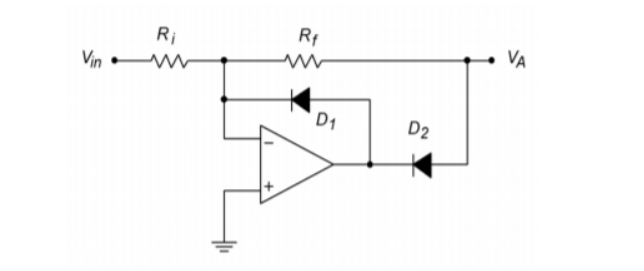

OP-Amp
Heute möchte ich über Operationsverstärker sprechen. Diese wunderbaren, aber geheimnisvollen Komponenten tauchen sehr häufig in Schaltplänen von analogen oder analog/digitalen Hybridschaltungen auf. Wir wollen diese Komponenten entmystifizieren.

Es gibt zwei grundlegende Faustregeln für den Umgang mit idealen Operationsverstärkerschaltungen. (Reale Operationsverstärkerschaltungen sind etwas komplizierter, aber darauf kommen wir später zu sprechen).
-
Die erste Faustregel besagt, dass Vout im Wesentlichen die Differenz der Spannungswerte an den beiden Eingängen ist, multipliziert mit einem beliebigen, aber hohen Verstärkungsfaktor A. \[ V_{out} = A (V_{in+} - V_{in-}) = \] kurz gesagt, dies führt zu
\[ V_{in+} = V_{in-}\]
Der nichtinvertierende Verstärker

Der nichtinvertierende Verstärker ist einfach und leicht zu berechnen: Die Verstärkung A ist die Ausgangsspannung geteilt durch die Eingangsspannung, die wie folgt berechnet werden kann:
\[ A = \frac{U_{out}}{U_{in}} = \frac{R1 + R2}{R1}=1 + \frac{R2}{R1}\]
\[U_{in}= 5V; R_{1} = 100 k\Omega; R_{2} = 100 k\Omega \]
\[ \frac{U_{out}}{U_{in}} = 1 + \frac{R2}{R1}\]
\[ U_{out} = ( 1 + \frac{R2}{R1}) \cdot U_{in} = ( 1 + \frac{100k\Omega}{100k\Omega}) \cdot 5V = (1 + 1) \cdot 5V = 10V\]
\[ A = 2 \]
Der Spannungsfolger
Ein Sonderfall des nichtinvertierenden Verstärkers ist der Spannungsfolger. Ein Spannungsfolger, auch Impedanzwandler genannt, wird verwendet, um eine Stufe von ihrer vorherigen Stufe zu puffern und zu entkoppeln. Er hat eine niedrige Impedanz am Eingang, aber eine hohe Impedanz am Ausgang. Dies wird verwendet, damit spätere Stufen die vorherigen Stufen nicht in Bezug auf die Spannung belasten.

Der (invertierende) Gleichrichter
Ein weiteres Beispiel für eine kleine Schaltung ist der Wechselrichter. Er lässt nur die negative Halbwelle eines sinusförmigen Wechselstroms durch.


Fortsetzung folgt…